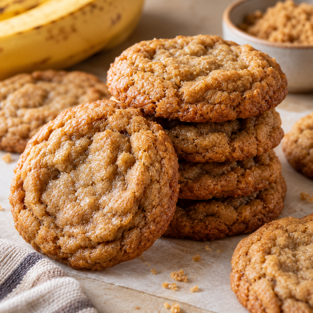

This is a weird recipe I came up with a few years ago. Initially, we were just out of eggs, so I tried to find a substitute for eggs, and applesauce worked pretty well. Although, the cookies tasted a bit like apples which wasn't great. Later, I decided to try making cookie dough that was safe to eat because I prefer cookie dough over cookies. I like bananas and they are very cheap, so I decided to use bananas as a substitute for eggs. I also like brown sugar, so I decided to make them banana brown sugar cookie dough. After trying it, still getting a terrible stomach ache after, and looking it up online, I found out you would have to bake the flour to make it safe to eat raw, so that idea was kind of a bust. But, I still like the cookies, so I kept the recipe.
| Ingredient | Quantity |
|---|---|
| 3 | Large Banana |
| 3 cups | Brown Sugar |
| 1/4 | Sugar |
| 2 sticks | Butter |
| 1 tbsp | Vanilla Extract |
| 5 cups | Flower |
| 1 tsp | Baking Soda |
| 1/2 tsp | Baking Powder |
| 1 tsp | Salt |
